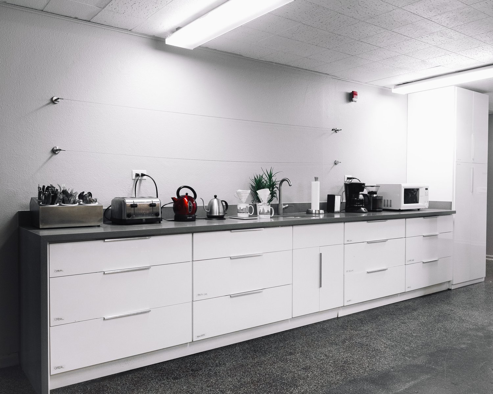
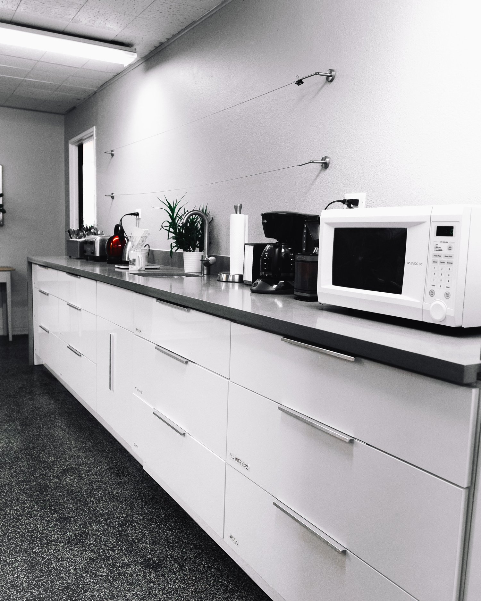
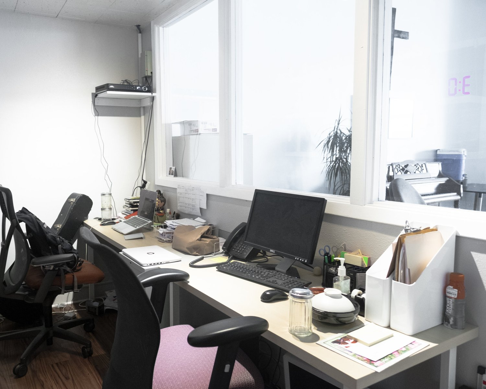
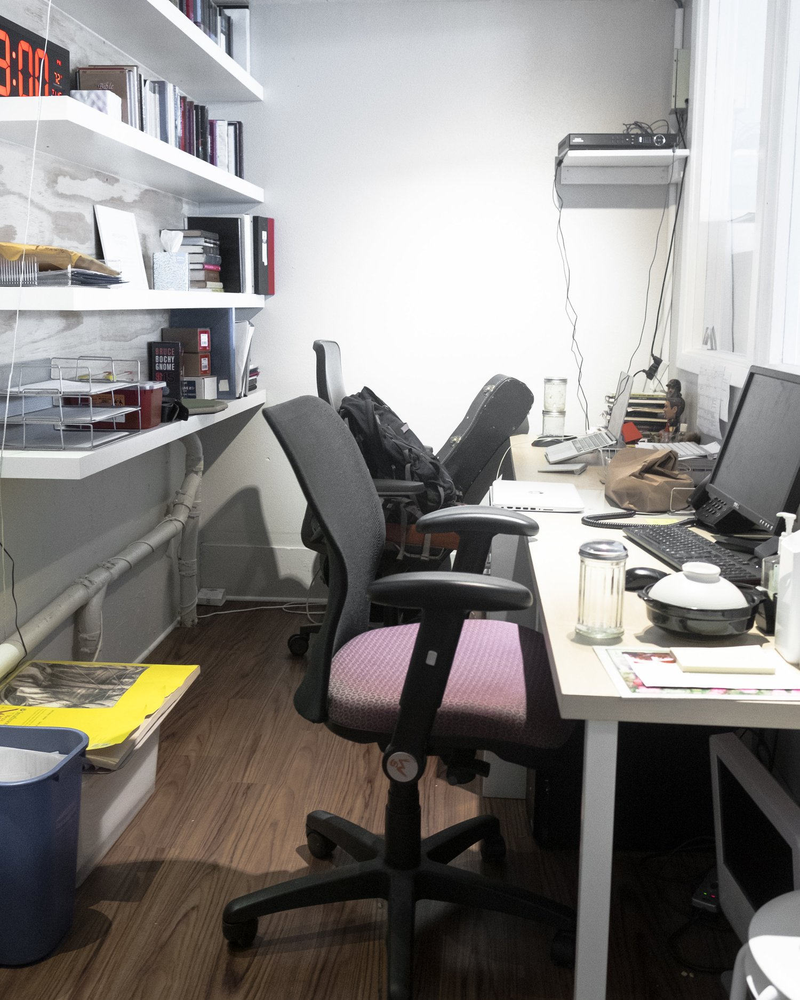
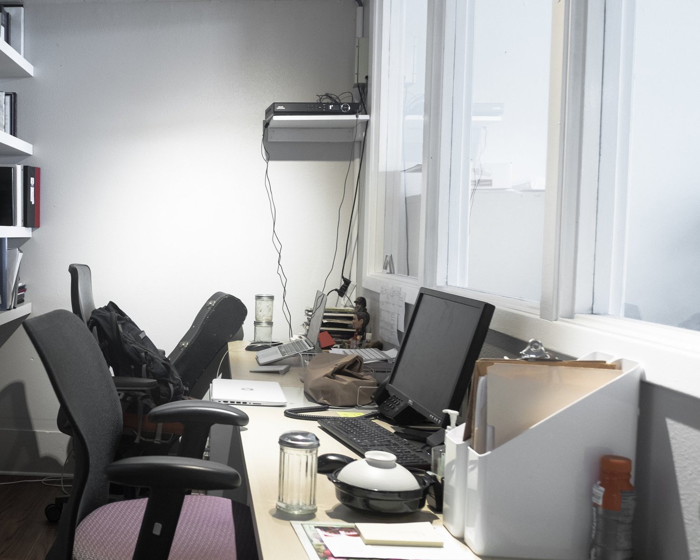
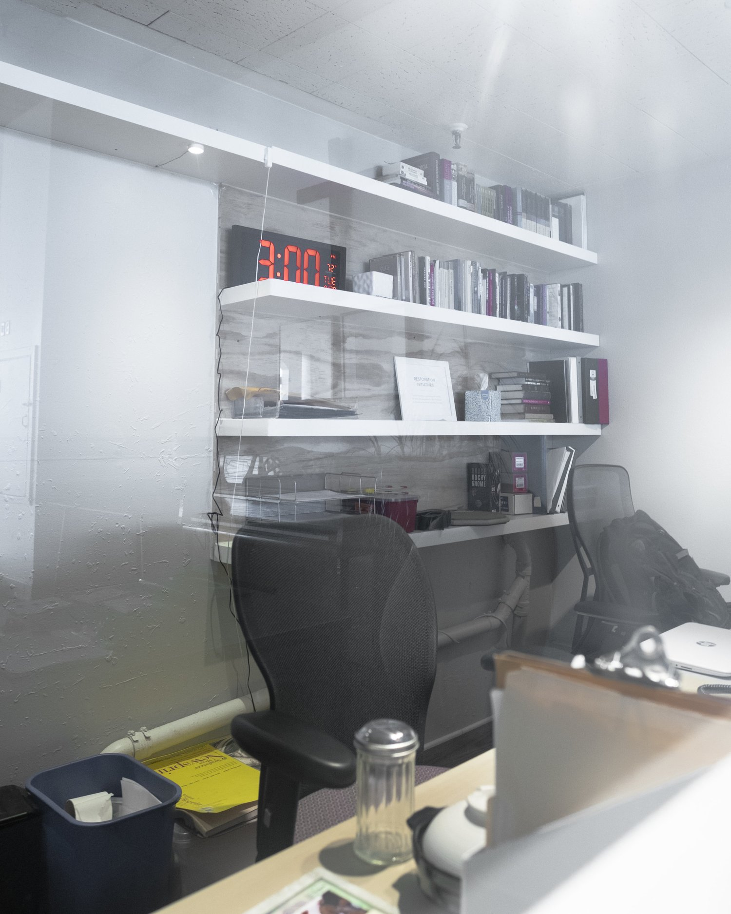
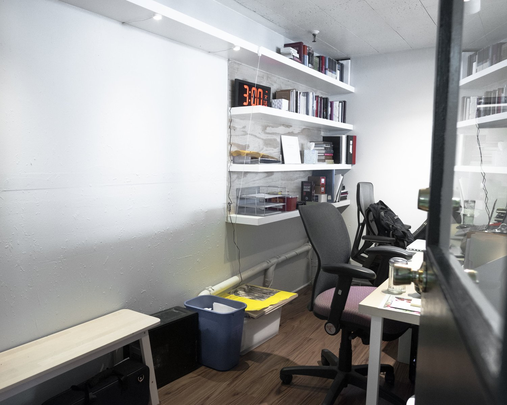

By Timothy Svoboda
Often, I take time during our weekly staff meetings to encourage, teach, and challenge the individuals that make up YWAM San Francisco. At a recent staff meeting I felt pressed to share on our calling to pursue God wholeheartedly and relentlessly.
But seek first his kingdom and his righteousness, and all these things will be given to you as well. Matthew 6v33
In an effort to drive this point home, I asked those present how they would react at the opportunity to search for a $5 bill in our buildings knowing the finder could keep it. Unsurprisingly, most were uninterested, with shrugging shoulders seen throughout. With two decently spacious buildings, and the limited 24 hours that we’re given daily, the proposition was far from enticing.
Expecting such a reaction, I then countered with an offer of the same task but with a prize of $100,000. Now, of course this isn’t something I’d actually be able to offer but the point was understood and every man, woman and child was ready to turn our base upside down for that money. With a motivating factor like that, it’s no surprise we find Jesus talking about money and possessions as often as He does! The point of the illustration is that most of us would look hard for a sum as large as $100,000. But how hard do we search after God, who is infinitely worth so much more than $100,000?
Pleased at the outcome of our meeting, I went on with the rest of the day as one does. No more than an hour later I was approached by a member of our Finance Department, Trevor Long. He inquired as to what I had shared during our morning staff meeting. Knowing he had definitely been present in the meeting, I found myself confused but went along with it.
I began by recounting the offer to search for $5. Trevor, nodded in agreement saying, "That’s right. Then what did you say?" Feeling as though I was in the midst of an interrogation, I wondered if I had misspoken in some way.
Disregarding these thoughts, I continued on, restating the offer to search for $100,000 with a sort of "finders keepers" rule in play. Trevor, agreeing once more saying, "That’s right."
Face stern, he went on to say, “I found this,” before handing me a slip of paper. It was a check from an anonymous donor that had come in that morning. Knowing that we’d been fundraising in an effort to completely pay off our mortgage, I was incredibly happy. Though I can’t I say I was expecting anything remotely like what I saw next.
Written on the check, "$100,000," I couldn’t believe it!
This process of transitioning from renters to owners has not been easy, and it wasn't something we had time to strategize over greatly. Regardless, from our initial push to secure a down payment and loan on our buildings to now, God has shown Himself to be faithful. He's shown up in the form of individuals and teams, and in finances, skills, and physical labor. After purchasing our buildings for $4 million, we're currently working towards paying the remainder of our loans, with $1.9 million standing between us and complete ownership of this wonderful space. It can feel like quite a daunting obstacle, but God continues to say otherwise through the sacrificial giving of friends like you.
Would you consider partnering with us financially as we pursue ownership? All special gifts will go towards eliminating this debt, and no amount of help is too small. You can donate by clicking below.
giveIn addition to the financial support we've received, we've been blessed to host construction teams. Staying from a few days to a week, they've partnered with us in the process of beautifying these old buildings. From installing a new serving station, to restoring some of our offices, these projects have brought new life to our base. (See renovation photos below)
Interested in bringing a work team? Click below to get in touch.
For other giving options click here.
SErve





